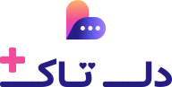
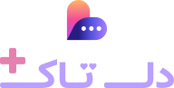

One consumer: the paywall hero. This is a hero-only asset at ≥120px artwork height. The Plus card on the Profile tab keeps its built treatment (text title, badge pill, gradient crown); manage-subscription keeps a plain text page title. A Plus surface needing a small mark uses the دلتاک پلاس badge pill — never a shrunken lockup.
| wordmark type | plus-mark | |
|---|---|---|
| Light | --logo-wordmark → --brand-navy-500 #261D82 · 13.20:1 page | --accent → --brand-pink-500 #F24C9A · 3.35:1 on white |
| Dark | --logo-wordmark → --brand-lavender-400 #B99FFF · 7.94:1 page | --accent (dark) #E481AF · 6.76:1 page |
The type follows the existing wordmark rule unchanged; the dark value is bound to --nav-active. The plus is a solid accent element, so it takes --accent and flips with it — the theme-exemption is the mark's gradient arms only. The light plus at 3.35:1 on white clears the 3:1 non-text threshold and does not clear 4.5:1; it is --accent unmodified and is recorded, not tuned.


| artwork | type ink | plus ink | icon ink | gap | minimum | |
|---|---|---|---|---|---|---|
| Horizontal | 247.23 × 44.18 | 192 × 32 | 28 × 28 | 44.18 × 44.18 | 11.05u (0.25 × mark) | 120px tall |
| Vertical | 192 × 97.21 | 192 × 32 | 28 × 28 | 44.18 × 44.18 | 8.84u (0.20 × mark) | 120px tall |
| Wordmark alone | 192 × 44.18 | 192 × 32 | 28 × 28 | — | — | 88px tall |
| ratio | value |
|---|---|
| cap-height ÷ ink box | 28.52 ÷ 32 = 0.891 — the base wordmark's is 0.892 |
| wordmark aspect | 192 ÷ 32 = 6:1 — base 4.67:1 |
| plus ÷ cap-height | 28 ÷ 28.52 = 0.98 |
| plus overhang above type ink | 12.18u = 27.6% of artwork height |
| clear space | 44.18u (the icon height) on all four sides |
Minimum artwork height is the figure on the scope line at the top of this card — stated once, there. Below it there is no lockup: use the دلتاک پلاس badge pill. Why 120 and not the measured legibility floor is in readme.md, PLUS LOCKUP SPEC.
هر روز بینهایت گفتوگو، و ببین چه کسی دلش با تو است.
هر روز بینهایت گفتوگو، و ببین چه کسی دلش با تو است.
Vertical at 140px — a full-screen sheet with a close button and no app chrome, which is why no compact build exists.
| file | fills | how to use |
|---|---|---|
| plus-lockup-horizontal-{light,dark}.svg | baked per theme | <img>-safe |
| plus-lockup-vertical-{light,dark}.svg | baked per theme | <img>-safe |
| plus-wordmark-{light,dark}.svg | baked per theme | <img>-safe |
| plus-wordmark.svg · plus-mark.svg | currentColor | build sources — inline only |
Every Plus lockup bakes its fills. The two currentColor files are the type and the plus glyph as separate sources, kept for composing — they are not lockups. Why no compact build exists is in readme.md, PLUS LOCKUP SPEC.
Derivations → readme.md § PLUS LOCKUP SPEC